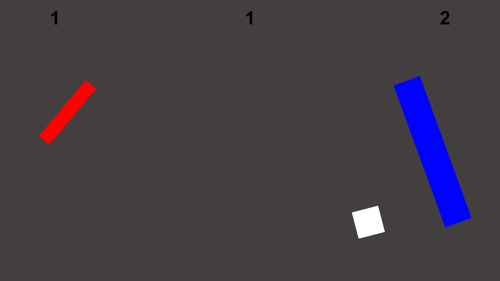
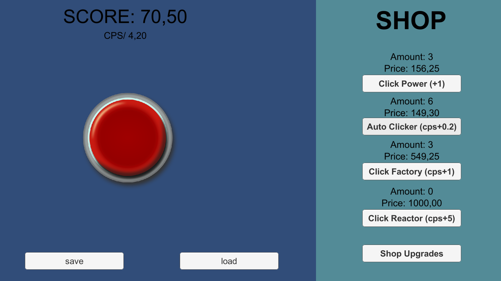
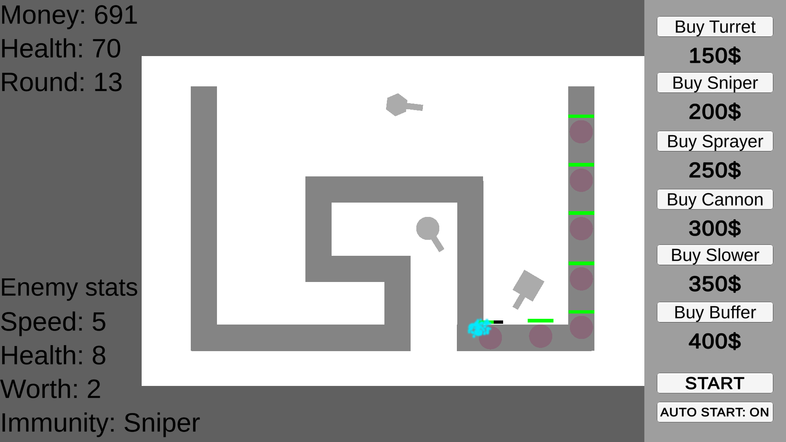

Hello i am Elias Ahramo and i am currently a third year student in Tampere studying in Vocational Qualification in Business Information Technology which is basicly just programming and computer repair and in the second year we got to choose if we went to learn programming or computer repair and i chose programming because i have always been interested in game development and programming!
When it comes down to the programming languages i know, i am good at css, html, php and MySQL i am ok at javaScript and i know the basics of java and this website has been made from scratch from the thing i have learned in school. also i am good at C# and i am always making new game projects in Unity even tho i wont release some of the games i will still learn a lot from them and i am always exited to create more games and learn more C#
Over here you can view the games i have made!
I have published all my games on itch.io! some of the games might be a bit bad but in the worst ones i didnt have much motivation on them so the quality suffered a lot from it
And over here there are some of the games i am most proud of!

New Pong it is my second game ever made on Unity it was my schools summer project where we had to make something related to programming or computer repair and i chose to make a game and we had to also put the amount of hours we worked on it on an excel spreadsheet and minimum time we had to work on it was 70h and i compleated it in 30h... so i failed, but i sill made everything i wanted to add to it so im happy with it! This game is like pong but way more advanced in the settings you can change the color of the background the players and the ball and you can change the physics a bit too and i made my first AI which was fun!

Bad Clicker! so i made this because one day in school my friend was using this one game engine that didn't have scripting on it to make a clicker game and then i said "hey what if i just make this in unity?" and then i made it in like 5-10 minutes. and every now and then when i was bored in school i kept adding new updates to it. and when it comes down to the game well it just is a normal clicker game where you click a button and get point with points you biy ubgrades!

Just another tower defence game! This game is my newest and most technical game yet. this was a school project where i well made a tower defence game... and well in this game there is only one level but all the waves are randomized and so are the enemies and also they sometimes have immunitys to some towers! and ofcourse you can place many different towers and sell them for 50% of their price and there are also 4 upgrades for each tower!
My current projects!
right now i am working on a new school poject which will be my first online game where there will be four players and one of them will be randomly selected to be a very powerfull boss and the rest of the players try to kill him or try dying... and my other project is one that i started for fun it will be a rogue like game where you fight waves of enemies that are randomized and ofcourse powerfull randomized bosses!